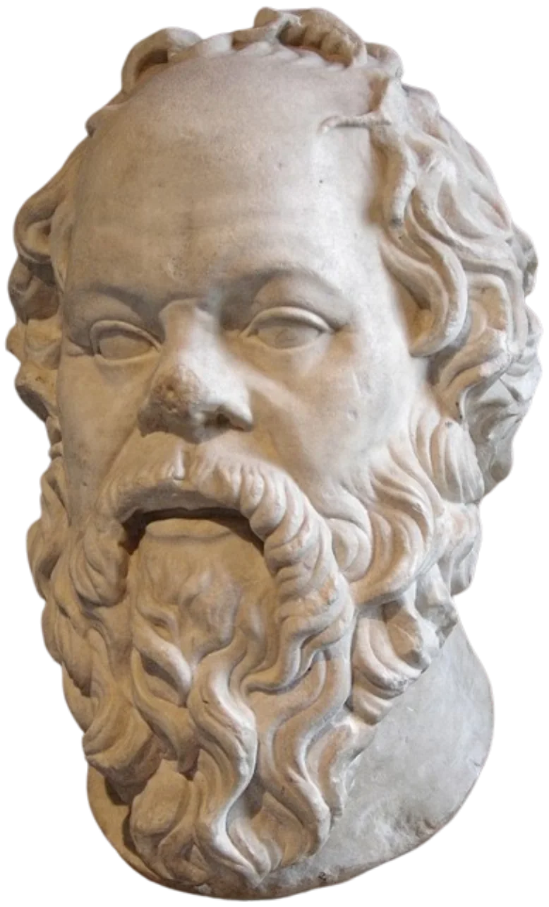
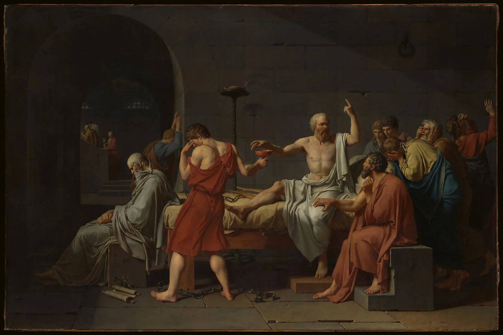

Filosofia antiga · Atenas · investigação
Sócrates
c. 469–399 a.C.
Quanto do que você acredita saber você realmente consegue justificar?
Sócrates não deixou escritos. O que sabemos sobre sua vida, seus argumentos e sua maneira de filosofar depende de testemunhos antigos que não coincidem completamente entre si.12
Comece a investigação
01 · O problema socrático
Existe um problema: Sócrates não escreveu nada
Reconstruir o Sócrates histórico exige comparar textos com gêneros, objetivos e distâncias diferentes. Platão, Xenofonte e Aristófanes são os três testemunhos literários antigos preservados que mais moldam nossa imagem dele; nenhum deve ser tratado como transcrição neutra.12
Platão
O Sócrates filosófico
Platão transforma Sócrates em personagem central de muitos diálogos. A Apologia apresenta sua defesa no julgamento e a investigação sobre quem realmente possui sabedoria, mas os diálogos não são gravações literais de conversas históricas.3
Quanto do personagem é Sócrates e quanto é construção filosófica de Platão?
Xenofonte
Outro Sócrates
Nos Memoráveis, Xenofonte apresenta um Sócrates preocupado com conduta, formação moral, autocontrole e utilidade prática. Seu retrato complementa e por vezes tensiona a imagem platônica.4
Diferenças de retrato revelam Sócrates ou os objetivos de cada autor?
Aristófanes
O Sócrates satirizado
As Nuvens, apresentada em 423 a.C., caricatura Sócrates como representante de tendências intelectuais vistas com suspeita. É uma fonte contemporânea valiosa para percepção pública, mas sua função é cômica e satírica.5
O que uma caricatura revela sobre seu alvo — e sobre a sociedade que ri dela?
02 · Contexto
Uma vida conhecida por fragmentos
A cronologia abaixo combina pontos relativamente bem atestados com reconstruções cautelosas. Ela não pretende preencher lacunas que as fontes não permitem preencher.1
- [A]
Nascimento em Atenas
A data é aproximada; Sócrates pertence à geração que atravessou o auge e a crise da Atenas do século V a.C.
- [P]
Experiência militar
Platão e Xenofonte preservam tradições sobre sua participação em campanhas militares, incluindo Potideia e Delion.
- [P]
As Nuvens
Aristófanes coloca no palco uma caricatura de Sócrates, mostrando que ele já era figura pública reconhecível.
- [I]
Exame público de crenças
As fontes o representam interrogando definições, pretensões de conhecimento e formas de vida em espaços públicos de Atenas.
- [P]
Julgamento
Meleto, Ânito e Lícon aparecem nas fontes ligados à acusação. Os temas centrais são impiedade e corrupção da juventude.
- [P]
Condenação e morte
Sócrates é considerado culpado e executado. Platão dramatiza seus últimos dias em Críton e Fédon.
- [A]
Muitos Sócrates
Discípulos, críticos e séculos de intérpretes transformam sua figura em campo permanente de disputa filosófica.
03 · Pense como Sócrates
Você acredita que sabe o que é justiça?
Este laboratório é uma ferramenta didática inspirada no elenchus — a prática de testar uma afirmação por perguntas e consequências. Ele não reconstrói uma conversa histórica de Sócrates e não decide se sua resposta está “certa”.2
Laboratório socrático
Etapa 1 de 6
RESULTADO DO EXAME
O que mudou quando sua ideia foi questionada?
O laboratório não concede um selo de verdade. Ele registra uma diferença: você terminou com uma afirmação que passou por justificativa, exemplo e objeção.
Privacidade: o que você digita fica apenas nesta página enquanto ela estiver aberta. Nada é enviado ou armazenado.
04 · As grandes perguntas
Uma pergunta simples pode esconder várias suposições
Os diálogos socráticos frequentemente começam com termos familiares e descobrem que defini-los é mais difícil do que parecia.
O que é justiça?
Uma ação justa continua sendo justa quando nos prejudica?
Investigar justiça →O que é coragem?
Não sentir medo é coragem — ou pode ser falta de compreensão do risco?
Ver Laques →O que é conhecimento?
Como distinguimos uma crença confiante de algo que realmente sabemos?
Questionar uma crença →O que é virtude?
É possível agir bem sem compreender o que torna uma ação boa?
Examinar a vida →O que é uma vida boa?
Riqueza, prestígio e sucesso são suficientes para viver bem?
Trazer ao presente →Quem sou eu?
Quantas das minhas crenças foram realmente examinadas por mim?
Testar uma crença →05 · Uma vida examinada
Não é uma biografia psicológica — é um modelo filosófico
Não temos documentação suficiente para reconstruir o desenvolvimento interior de Sócrates como uma biografia moderna. O percurso abaixo sintetiza como as fontes e a tradição filosófica representam sua forma de vida.1
06 · Atenas, 399 a.C.
Quando investigar se torna um problema político
As fontes preservam um julgamento por impiedade e corrupção da juventude. A Apologia de Platão transforma a defesa de Sócrates em uma pergunta maior: até onde alguém deve manter uma prática filosófica quando ela entra em conflito com o julgamento da cidade?3
Impiedade · corrupção da juventude
As formulações exatas chegam até nós por fontes antigas, sobretudo Platão e Xenofonte.
Defender-se sem abandonar a investigação
Na narrativa platônica, Sócrates insiste que o exame de si e dos outros faz parte da missão que atribui à sua vida.
Morte
A votação o considera culpado e, na fase de pena, a sentença capital prevalece.
Fugir ou permanecer?
Críton dramatiza a recusa de uma fuga planejada por amigos e transforma lei, justiça e coerência em novo problema filosófico.

07 · Mito × evidência
“Só sei que nada sei”?
“Só sei que nada sei.”
A fórmula moderna é útil como resumo, mas não deve ser apresentada automaticamente como uma frase literal documentada de Sócrates.
Na Apologia, Platão apresenta Sócrates distinguindo sua posição da de pessoas que acreditam saber aquilo que não conseguem justificar. O núcleo é reconhecer limites do próprio conhecimento, não celebrar ignorância absoluta.3
Humildade intelectual aqui significa manter uma crença aberta a exame e revisão quando faltam razões suficientes.
08 · Por que estudar Sócrates hoje?
Melhorar perguntas antes de multiplicar respostas
Pensamento crítico
Separar força retórica de justificativa.
Argumentação
Explicitar premissas e testar consequências.
Humildade intelectual
Distinguir convicção de conhecimento demonstrável.
Autoconhecimento
Examinar crenças que normalmente passam despercebidas.
Ética
Perguntar não só o que funciona, mas como devemos agir.
Leitura crítica
Comparar fontes conflitantes antes de concluir.
Sócrates não oferece apenas respostas. Ele obriga a melhorar as perguntas.
09 · Biblioteca socrática
Leia versões diferentes do mesmo problema
As obras abaixo não devem ser lidas como uma coleção de transcrições. Elas permitem comparar gêneros, autores e modos diferentes de construir Sócrates.
Apologia de Sócrates
Julgamento · missão filosófica · conhecimento · ética
Abrir fonte primária →Críton
Fuga · dever · cidade · coerência
Explorar →Eutífron
Piedade · definição · contraexemplo
Um modelo clássico de investigação conceitual.
Laques
Definição · experiência · conhecimento
Mostra como exemplos podem falhar em produzir uma definição geral.
Xenofonte — Memoráveis
Conduta · autocontrole · utilidade · virtude
Comparar →Aristófanes — As Nuvens
Comédia · sátira · percepção social
Ler como sátira →10 · Laboratório socrático aberto
Questione uma crença sua
Escreva uma afirmação qualquer. O sistema não avalia se ela é verdadeira; ele apenas conduz um roteiro de esclarecimento, justificativa, contraexemplo e revisão.
Etapa 1 de 5
MAPA DO SEU EXAME
Uma crença antes e depois das perguntas
- Afirmação inicial
- Contraexemplo considerado
- Formulação revisada
Uma revisão não precisa abandonar a ideia inicial. Muitas vezes o ganho é descobrir condições, limites ou definições que antes estavam implícitos.
Nada do que você escreve é enviado, salvo ou analisado fora do seu navegador.
11 · Como construímos esta página
Fonte, evidência e incerteza não são a mesma coisa
Fonte antiga
Platão, Xenofonte, Aristófanes e outros testemunhos antigos. São fontes essenciais, mas cada uma tem gênero e intenção próprios.
Pesquisa acadêmica
Reconstruções e análises especializadas que comparam fontes, contexto histórico e debates interpretativos.
Interpretação
Organização didática ou leitura filosófica. Deve ser apresentada como interpretação, não como fato biográfico.
Incerto
Questões em que as fontes sobreviventes não permitem uma conclusão segura.
Regra editorial: quando a evidência não permite certeza, a página deve mostrar a incerteza em vez de preenchê-la com uma narrativa conveniente.
Fontes e leituras
Referências e critérios
- [A] Stanford Encyclopedia of Philosophy. Socrates e suplemento sobre o problema socrático. Consultado em 18 ago. 2026.
- [A] Internet Encyclopedia of Philosophy. Socrates. Consultado em 18 ago. 2026.
- [P] Platão. Apologia, Perseus Digital Library.
- [P] Xenofonte. Memoráveis, Perseus Digital Library.
- [P] Aristófanes. As Nuvens, Perseus Digital Library. A comédia foi apresentada em 423 a.C.; sua natureza satírica limita o uso como retrato biográfico.
- [imagem] S. Perquin. Socrates (transparent).png. Wikimedia Commons, CC0 1.0. Cópia otimizada localmente para esta página.
- [imagem] Jacques-Louis David. The Death of Socrates, 1787. The Metropolitan Museum of Art, accession 31.45, Public Domain. Cópia otimizada localmente.